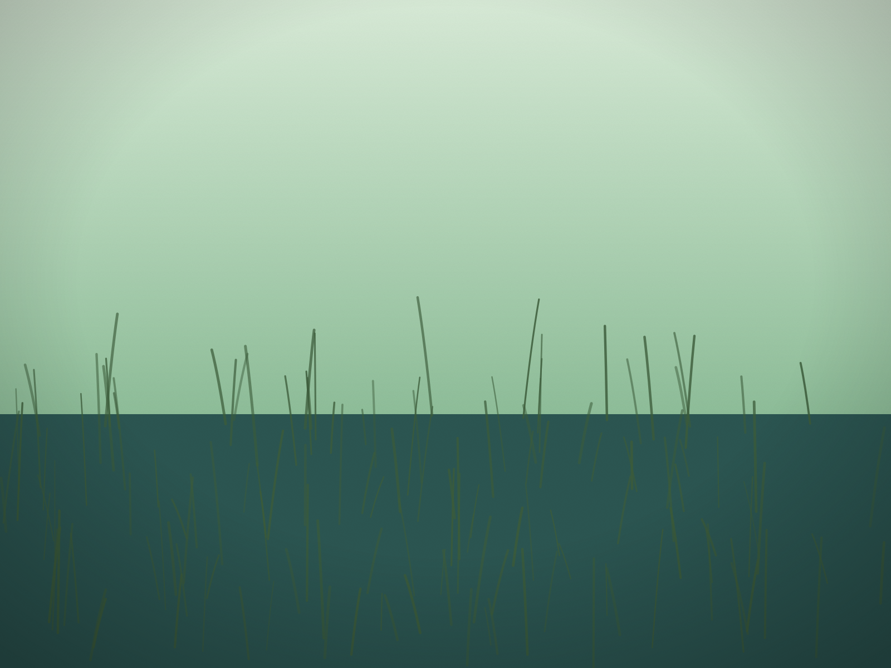

An hour's drive inland from the beaches, in western Sussex County, is a cypress swamp at the very edge of where cypress swamps grow. Trap Pond State Park holds the northernmost naturally occurring stand of baldcypress in the United States.
A tree worth cutting
Baldcypress was prized for its rot-resistant wood, and the cypress around Trap Pond was harvested extensively. The pond itself comes out of that history: the wetland was dammed to power a small sawmill, Trap Mills, which cut the harvested cypress into saleable timber.
The two state sources disagree on when the dam went in. One puts it in the late 1700s, the other in the late 1800s. What they agree on is the result. Most of the baldcypress at Trap Pond today is second-growth, trees that came back after the logging.
From farmland to park
After the logging ended, landowners enlarged the pond and installed drainage tiles to dry out the surrounding land for farming. In 1930 the federal government bought Trap Pond and the farmland around it and brought in the Civilian Conservation Corps to develop the area for recreation.
In 1951, when Delaware's legislature authorized its first three state parks, Trap Pond was one of them. The state park system is 75 years old this year.
What it is now
Trap Pond is one of the state's inland parks, a long way in character from the dunes and surf of Cape Henlopen or Delaware Seashore. It is a place of still water, and of trees standing in it. For a visitor from the coast, it is a reminder that Sussex County is more than its beaches.
Programs, rentals and hours are set by Delaware State Parks and change with the season; check the park's current information before you go.
Sources: Delaware State Parks' Trap Pond page (destateparks.com) for the northernmost naturally occurring baldcypress stand and the park's history; DNREC's Trap Pond watershed success story (dnrec.delaware.gov) for the sawmill, the drainage tiles, the 1930 federal purchase and the Civilian Conservation Corps; the two sources' different dates for the dam are reported as a disagreement. Delaware State Parks' "Our Story" for the 1951 founding of the park system. Delaware Beach Finds did not visit the park for this story.